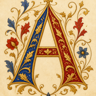

✠
Lumina
✠
The Holy Bible · Douay-Rheims Version
❦
Book
Focus
A−
A+
▶
⚙
☾
🔍
⏱
♥
‹
Back
›
Fwd
✧
Verse
⏱
Timer
♫
Psalter
✠
Daily
✙
Prayers

Armarium
🔔
Reminders
⛪
Chapter
🧠
Mind
♥
Favorites
☰
More
Library
Scriptorium
▶
Listen
Lumina requires JavaScript to display the sacred text.